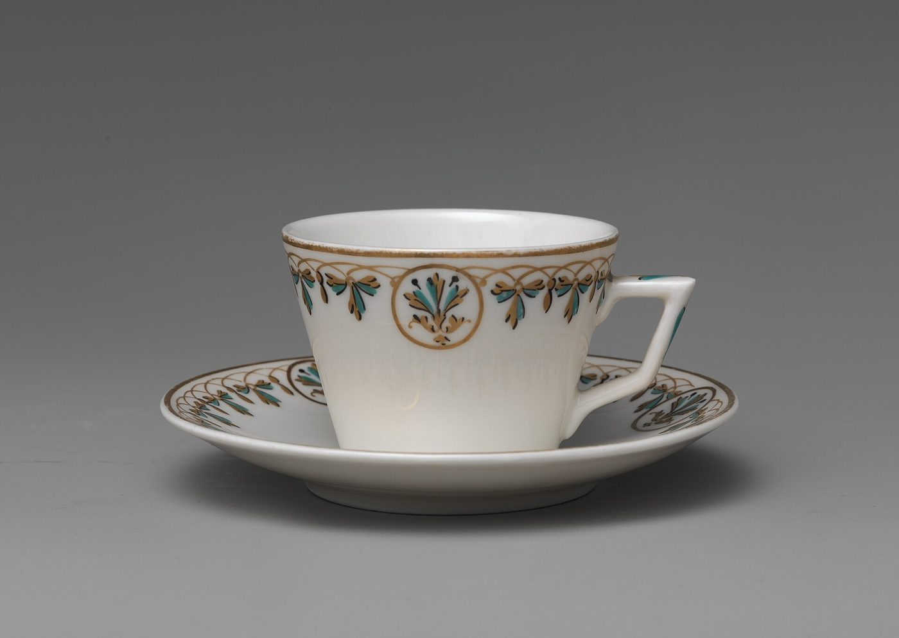
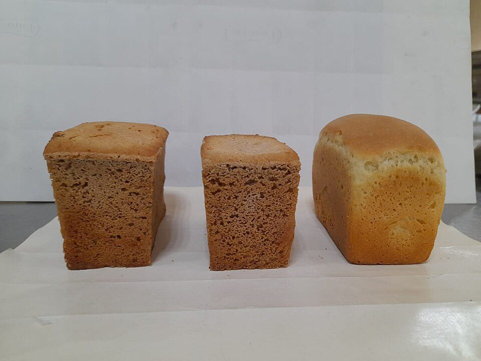
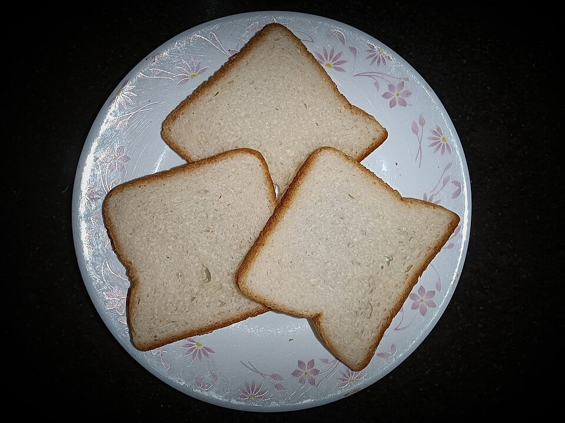
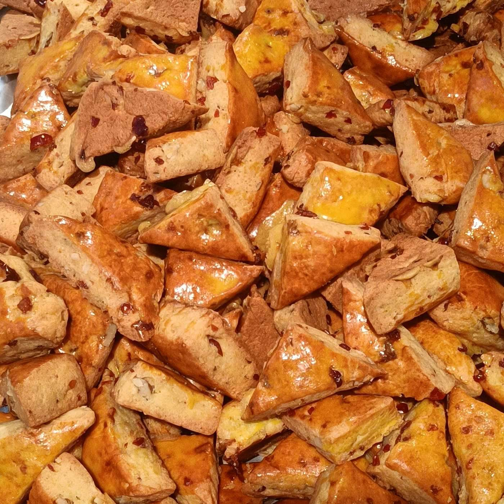

メニュー
メニューは準備中です
お品書きや価格は、確認でき次第ご案内します。ここでは、六つの部位の配置図に沿って、このサイトの見かたをご紹介します。
部位の一覧
1
バッテリー
フレームに取り付ける、電気をためておく電池。モーターに電気を送ります。
2
ドライブユニット
ペダルのまわりに収まる、こぐ力を助けるモーターの部分。
3
操作パネル
ハンドルにつく、電源や助けの強さを切り替える表示つきのスイッチ。
4
スピードセンサー
車輪の回る様子を伝える、小さな検知部品。
5
充電器
コンセントにつなぎ、バッテリーに電気をためるための機器。
6
ブレーキレバー
ハンドルについていて、握って止まるためのレバー。
制作側の連想で、お店の理念・由来とは無関係です。実際の製品の仕様を示すものではありません。
写真(イメージ)
焼き菓子とカップの写真





写真はイメージです。お店のものではなく、お店で提供している商品を示すものでもありません。
| お品書き | 準備中 |
|---|---|
| 価格 | 準備中 |